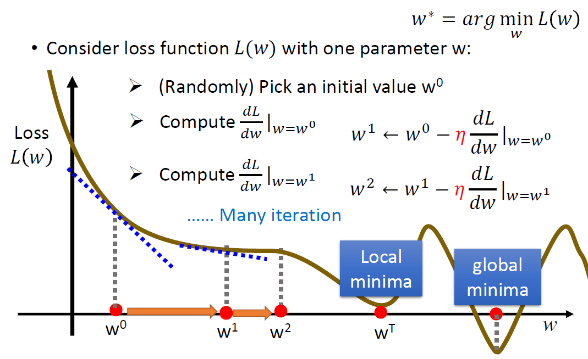

介紹如何使用 Gradient Descent 迭代找出 Linear Regression 的最佳解。
Cost Function (Loss Function)
Part 1 當中提到，我們的目標是計算所有資料點原始值 y 到這個超平面的總距離和，要讓這個和越小越好，最常見的計算方法為 Mean Squared Error (MSE)，假設共有N筆資料:
$$ MSE = \frac{1}{N} \sum_{n=1}^N (f(x_n)-y_n)^2 $$
也就是每一個資料點套入線性模型中得到的預測值，和實際值的差距，取平方(為了轉成正值)，總和再除以資料點數量計算平均。
Gradient Descent
根據 cost function:
$$ MSE = \frac{1}{N} \sum_{n=1}^N (f(x_n)-y_n)^2 = \frac{1}{N} \sum_{n=1}^N (Wx_n-y_n)^2 $$
如果以 W 跟 cost function 作圖(如下圖假設我們只有一個$w$)，根據不同的$w$會有不同的 loss 值，曲線最低點時的$w$就是我們想要的模型。

Gradient Descent的概念就是對於 W 做微分，得到的值會是該點的斜率，而在斜率等於0的地方就是我們想要找的點，因此隨機從一個起始的$w$開始，計算此時的斜率，並以斜率的正負來判斷$w$需要加大還是縮小調整。
斜率是負的時候表示W該往右邊移動(加大)，斜率是正的時候表示W該往左邊移動(縮小)，不斷更新W之後最後盡量找到斜率=0的地方，不過這種找法有可能找到的是local minimum而不是global minimum。
整體而言更新的步驟如下:
- 隨機選擇$W$初始化的值
- 計算此時對$W$微分的值
- 更新 $W \leftarrow W - \eta*梯度 $ ($\eta$是 learning rate，由我們自己設定，通常是0.001之類很小的數，控制每次更新的更新幅度大小)
- 重複2、3直到一定的次數，或是當第2步驟算出來的梯度為0即可停止
對於 bias $b$來說，計算方式也是一樣的，只是計算的是對$b$微分的值。
上述的步驟是假設此時模型只有一個$w$，即$f(x) = b + w_1x_1$(圖中的$w^0$上標表示的是第幾輪的參數)，如果現在我們的模型共有三個特徵，即$f(x) = b + w_1x_1 + w_2x_2 + w_3x_3$，在2、3步驟更新時，必須要針對全部的w都計算完loss gradient，再去更新w的值，而不能算完一個gradient就更新一個w也就是計算的步驟為:
- 計算對$b$的偏微分
- 分別計算對$w_1$~$w_3$的偏微分
- 更新$b$
- 更新$w_1$~$w_3$
Gradient 計算
針對$w$、$b$的偏微分計算如下，假設有2個特徵:
$$ L(w,b) = \frac{1}{N} \sum_{n=1}^N ( b+w_1x_1+w_2x_2 - y )^2$$
$$ \frac{\partial L}{\partial b} = \frac{2}{N} \sum_{n=1}^N ( b+w_1x_1+w_2x_2 - y )$$
$$ \frac{\partial L}{\partial w_i} = \frac{2}{N} \sum_{n=1}^N ( b+w_1x_1+w_2x_2 - y )x_i$$
根據公式即可更新參數$b$及$w$
Feature Scaling
在使用 Gradient Descent 時，需要考慮到各個 feature 的取值範圍是否差距太大，例如:
$ 0 < x_1 < 10 , -10000 < x_2 < 10000 $
此時如果不對 feature 做 scaling 的話，會導致 gradient descent 需迭代更多次才能找到 minimum。
常見的作法是將該 feature 減去平均值，再除以取值範圍，rescale到 -1~1的區間來做運算。
例如上面的例子，$x_1$就是減去平均之後除以10，$x_2$則是減去平均之後除以20000。